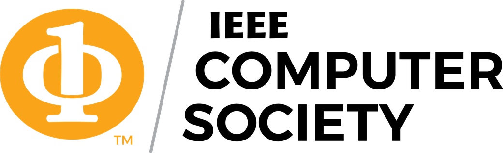

-
A · Unos y ceros
-
B · La paleta del campus
-
C · Actas
-
D · Moderna

Prototipos de la fase de exploración para el capítulo estudiantil IEEE Computer Society del ITVER. El contenido provisional está marcado en el código; ábrelo con “ver provisional” para resaltarlo en rojo.